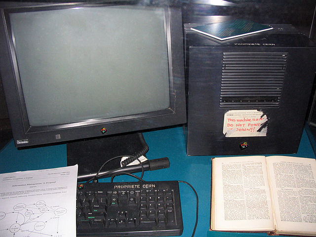
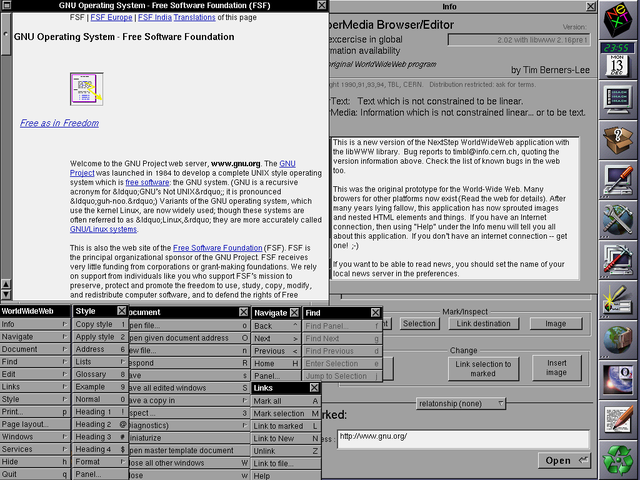
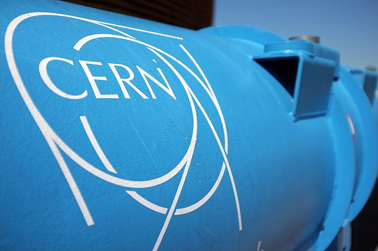
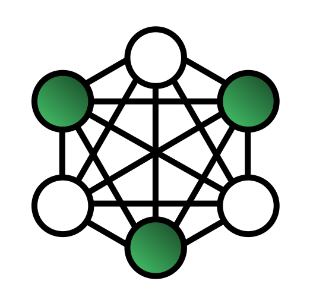
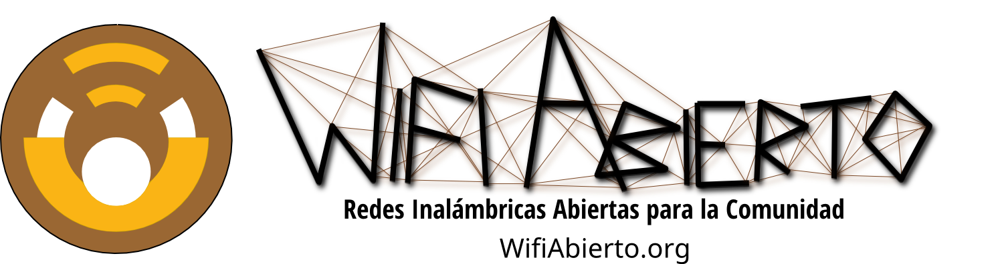

La Web Abierta: ¿Por qué debe importarme?
Sebastián Magrí (@sebasmagri). Abril de 2014
Para comenzar...
¿Qué es la Web?
Un poco de historia...
...sobre la joven Web.
1989
Tim Berners Lee escribe una propuesta sobre un sistema de manejo de información.
1990
Tim Berners Lee y Robert Cailliau mejoran esa propuesta y la llaman la WorldWideWeb. El concepto es una red de documentos enlazados entre si que se pueden observar a través de navegadores de contenido.
A finales del año, la misma computadora que sirvió como primer servidor es utilizada para crear el primer navegador Web, llamado WorldWideWeb, que también servía de editor.
El primer servidor Web
El primer navegador web: WorldWideWeb
1991
El 23 de Agosto nuevos usuarios comienzan a acceder al WorldWideWeb, y se marca en el calendario como el
Día Internacional del Internauta
1993
El 30 de Abril el CERN anuncia que la Web sería Libre para cualquier persona; de pies a cabeza.
1994
Berners Lee crea el Consorcio de la WorldWideWeb, o W3C, para definir los estándares de la Web de manera abierta.
La Web fue diseñada y entregada de manera abierta al mundo para ser un ecosistema al servicio de la humanidad
Abierta
Interconectada
Segura
Mientras crecía
La Web tuvo que enfrentarse a un sinfin de contratiempos.
- Los centros de poder trataron evitar su crecimiento.
- Corporaciones y gobiernos trataron de restringir la libertad de elección en la Web y de controlar los protocolos y estándares de la Web para su beneficio.
- La falta de libertad en la Web permitió el crecimiento de amenazas a la seguridad e integridad de los usuarios
1998
Nace el Proyecto Mozilla como iniciativa para promover la apertura, la innovación y la oportunidad en la Web

Hasta hoy
- La Web, e Internet, han cambiado completamente el mundo en el que vivimos
- Las sociedades comienzan a tomar conciencia del valor de la Web
- Los estándares abiertos se abren camino entre los cerrados; una luz hacia el futuro.
- Las voces que reclaman por los derechos de los ciudadanos en la Web, comienzan a escucharse con más fuerza
Sin embargo...
Aún existen amenazas importantes y aún quedan tareas y retos pendientes
Acceso y Disponibilidad
Más de dos tercios de la población mundial aún no tiene acceso a la Web, la mayoría de ellos en países en desarrollo, de acuerdo con Internet World Stats
Inclusividad
La Web es una fuente de desarrollo de gran potencial para la humanidad, pero no es reconocida aún como un Bien Común.
La voz de muchas personas aún no se puede escuchar en la Web, dejándolas fuera de su desarrollo y su crecimiento.
Libertades fundamentales bajo amenaza
Privacidad
Los usuarios están bajo el asedio de programas de Vigilancia Masiva desarrollados en nombre de la libertad por Gobiernos con el apoyo de Corporaciones
La Retención de Datos es una práctica común en los servicios más populares en la Web
En ausencia de privacidad, no existe libertad de expresión real.
Libertad de Acceso a la Información
La Censura es practicada por las corporaciones e instituciones de los gobiernos de manera arbitraria y sin transparencia
Muchos Datos que deberían ser públicos, aún están fuera del acceso de los ciudadanos. Esto permite la corrupción y disminuye la confianza de los ciudadanos.
Estándares, Protocolos e Interoperatividad
Muchas corporaciones e instituciones aún manejan su información bajo estándares y protocolos cerrados, desacelerando el crecimiento de la Web al impedir la Interoperatividad y el mejoramiento de los sistemas al ritmo que la Web necesita
Seguridad
Aún existe una gran cantidad de sitios en la Web donde la seguridad y los datos de los usuarios están en riesgo
¿Cuál es la solución?
¡La Web Abierta!
¿Qué caracteriza a la Web Abierta?
La Web como bien común de la humanidad
La Web no pertenece a un particular o a un grupo de partes interesadas, sino a la humanidad como raza.
Diversidad y Libertad de Expresión
Todas las personas pueden expresar sus ideas y vivir de acuerdo a sus costumbres libremente, y merecen ser respetadas por eso.
Inclusividad y Participación
Cualquier persona en el mundo puede hacer vida en la Web y ser parte de su desarrollo y crecimiento, sin importar su nacionalidad, pensamientos, condiciones o cualidades.
Descentralización, Distribución y Neutralidad
El control de la Web, y de la plataforma de Internet debe estar lo más cerca posible de cada usuario y no pueden existir restricciones selectivas a los elementos de la Red
Transparencia
Las reglas de la Web Abierta y la información sobre la operación de la misma deben ser de conocimiento público.
Privacidad y Seguridad
Las tecnologías que rigen la Web deben ser abiertas y proteger al usuario
Innovación
La Web debe ser una plataforma para el crecimiento de nuevas ideas en favor del bienestar de la humanidad de manera libre y abierta
¡La Web Abierta es la Web que queremos!
¿Quieres ser parte de la Web del futuro?
Sin importar tus capacidades o condiciones, puedes hacer la diferencia hoy y formar parte de la
Web que queremos
Únete a millones por una Web mejor con Mozilla
Aprende y enseña la Web con Webmaker
Defiende tus derechos en la Web con AccesoLibre
Ayuda a la Web a llegar a más gente con WifiAbierto
!Gracias!
Todas las imágenes de Wikimedia Commons y EFF
Publicado con licencia Creative Commons Attribution-ShareAlike International License